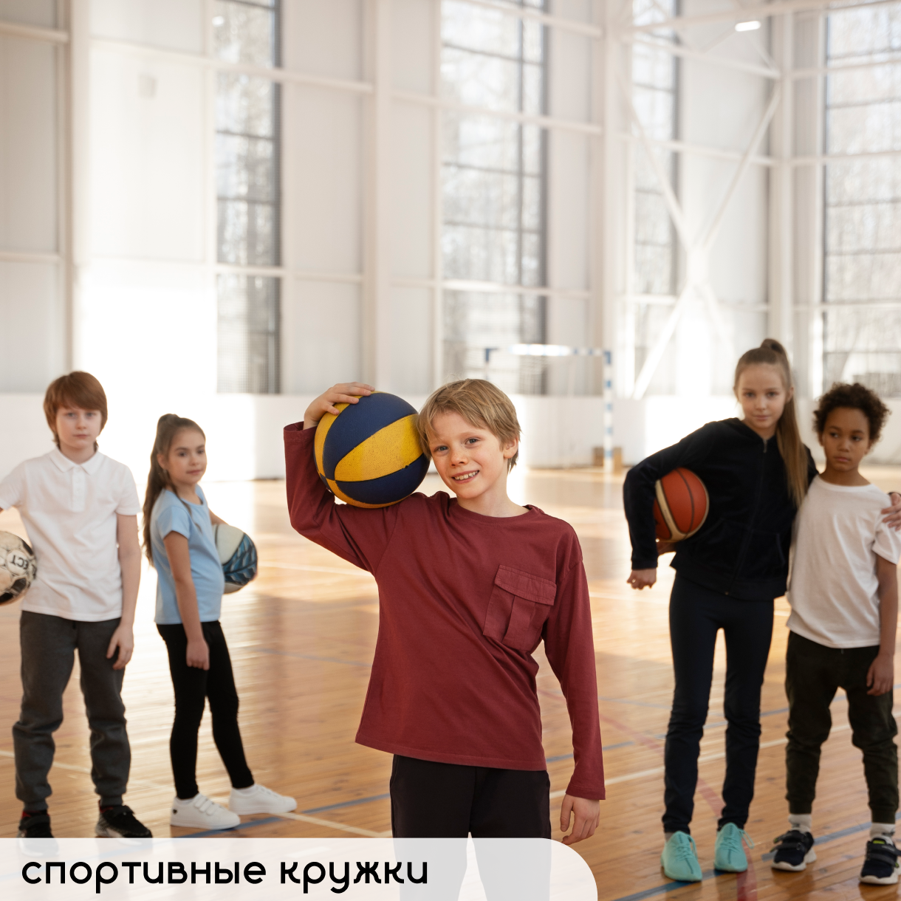
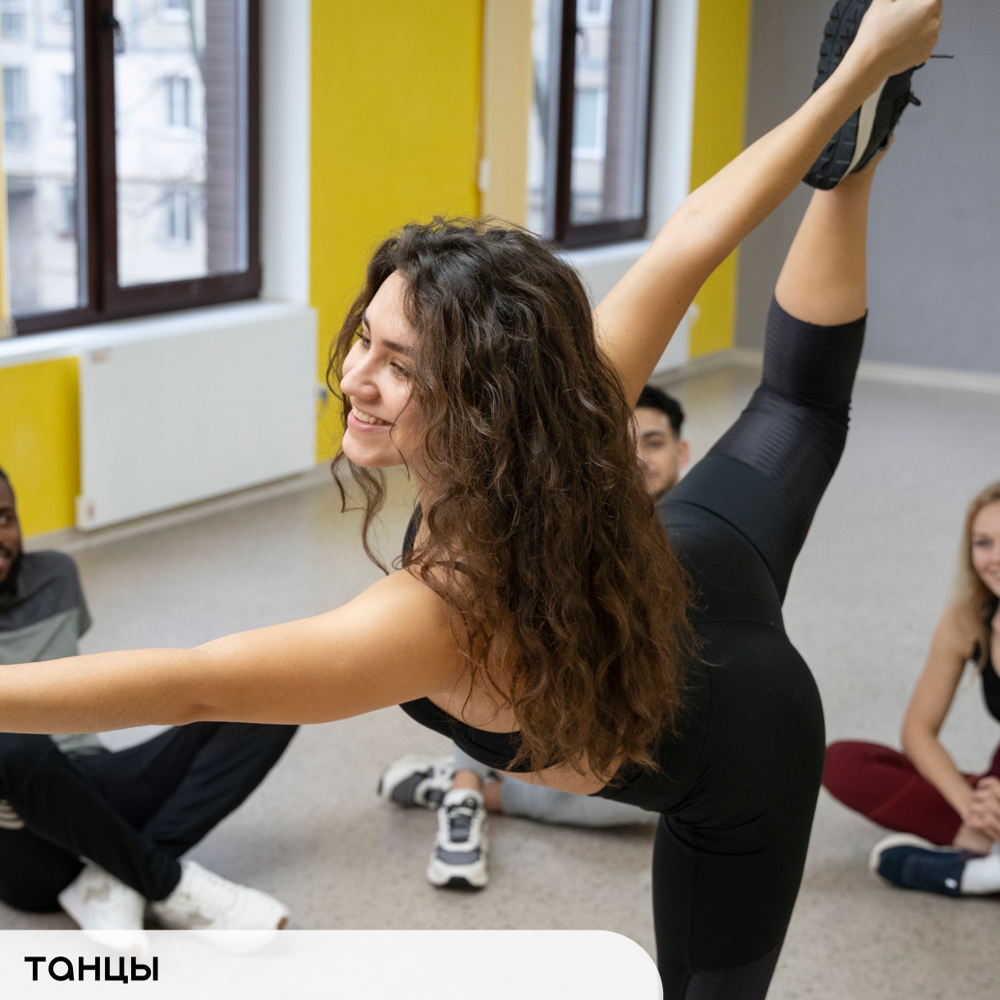

Многим детям и подросткам бывает очень тяжело справляться со всем навалившимся на них грузом. Проблемы в школе, в семье, отсутствие друзей - это частые причины плохого настроения и самочуствия учеников. Психологические группы стали бы огромной помощью для таких рерят. Здесь они могли бы поделиться своими проблемами, получить советы и помощь, а самое главное - побывать в дружеской обстановке и быть уверенным в том, что вся информация здесь строго конфиденциальна.
Кружки


Школьнику кружки и секции помогают развиваться, оттачивать навыки, узнавать себя и свои сильные стороны, повышать самоуверенность. Также для подростков это прекрасная возможность ненадолго обстрагироваться от мира, забыть о проблемах и просто расслабиться. Создание творческого пространства, танцевального, спортивного или любого другого кружка, а также других секций способствует развитию детей, организации их времени, выявлению талантов учеников и насыщению их жизни новым, необычным опытом.